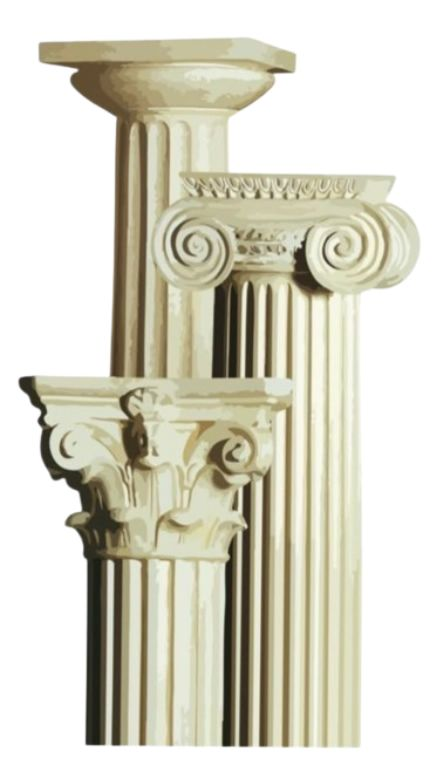
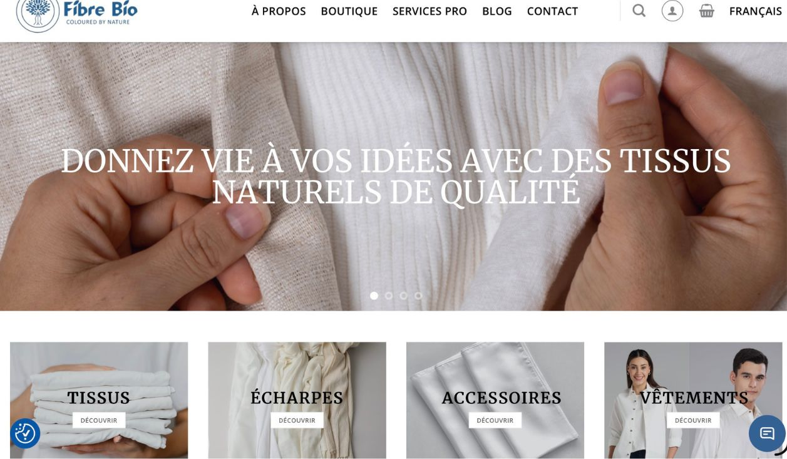
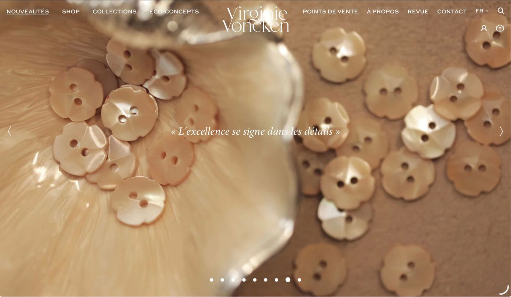
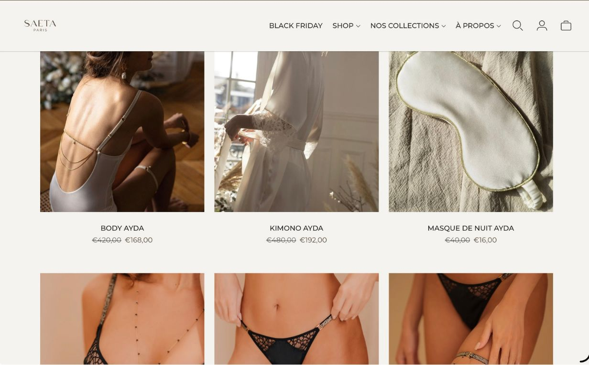

The Beauty of
Responsibility
Les Trois Piliers

PERSONNALITÉ
SUBLIMER
CONSCIENCE
SUBLIMER
CONSCIENCE
ETHICAL RESPONSIBILITY
Créer avec conscience
- Natural Materials — Privilégier des matières naturelles, durables et de qualité.
- Local Craftsmanship — Favoriser les circuits courts et la fabrication artisanale.
- Human Respect — Garantir le respect des droits humains et des conditions de travail.
- Know-how Preservation — Valoriser les savoir-faire locaux et internationaux.
- Conscious Production — Privilégier une production raisonnée plutôt que la course au prix le plus bas.

FIBRE BIO - Fournisseur spécialisé dans les textiles biologiques et naturels, proposant une sélection de matières de qualité pour une mode plus responsable.
STRONG IDENTITY
Créer avec personnalité
- Artistic Direction — Développer un univers esthétique singulier et cohérent.
- Creative Freedom — Encourager l’originalité et s’affranchir des tendances imposées.
- Brand Recognition — Construire une identité visuelle forte et reconnaissable.
- Unique Creations — Imaginer des pièces originales et distinctives.
- Personal Expression — Permettre à chacun d’exprimer sa personnalité à travers ses vêtements.

VIRGINE VONCKEN - une marque qui associe matières nobles, fabrication locale et exigence esthétique.
CUSTOMER EXPERIENCE
Créer pour sublimer
- Body Enhancement — Concevoir des coupes qui valorisent différentes morphologies.
- Everyday Comfort — Garantir confort et liberté de mouvement.
- Skin-Friendly Materials — Sélectionner des matières agréables au contact de la peau.
- Attention to Detail — Soigner les finitions, les détails et la qualité.
- Self-Confidence — Créer des vêtements qui donnent confiance et permettent de s’affirmer.

SAETA PARIS - Marque de lingerie qui associe féminité, matières délicates et confort, avec une attention particulière portée à la qualité des textiles et au respect de la peau.